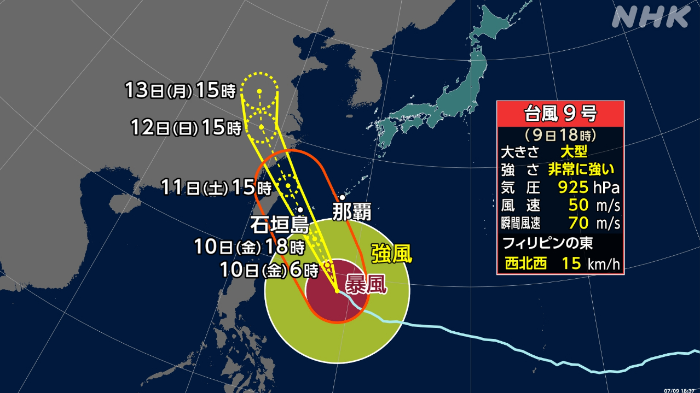
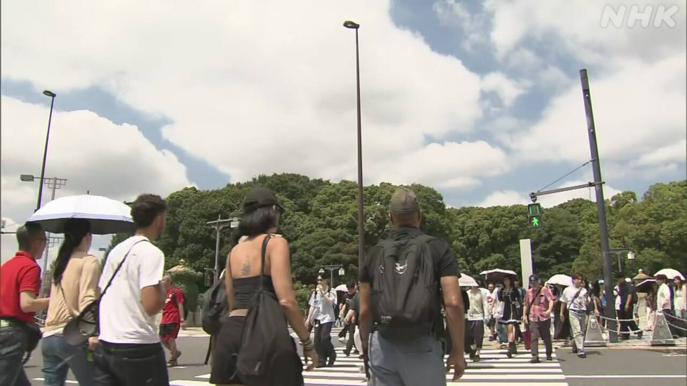
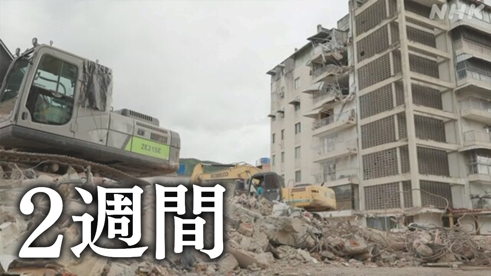
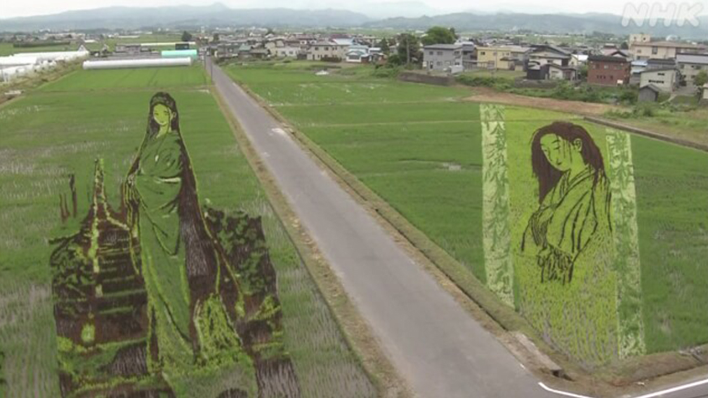

最新ニュース
1️⃣ 風がとても強い台風 10日から11日に沖縄県の近くに来そう

大きくて、風がとても強い台風9号が、10日から11日、沖縄県の近くに来そうです。
宮古島や石垣島などでは、家が倒れるほどのとても強い風が吹くかもしれません。
雨もたくさん降りそうです。
沖縄県では、波が高くなって、海の近くでは家に水が入る心配があります。
鹿児島県の奄美地方も、波が高くなりそうです。
気象庁は、台風の災害に気をつけるように言っています。雨や風が強くなる前に、丈夫な建物の中などに入ってください。
2️⃣ 今週の終わりごろまでとても暑くなりそう 熱中症に気をつけて

9日は、たくさんの場所で、とても暑くなりました。35℃以上になった所もありました。
福岡県久留米市と大分県日田市は35.5℃、京都市は35.3℃でした。東京も31.7℃まで上がりました。
気象庁によると、今週の終わりごろまで、日本のいろいろな所で、とても暑くなりそうです。
気温や湿度が高いと、家の中でも熱中症になることがあります。エアコンや扇風機を使って涼しくしましょう。
外に出るときは、帽子や日傘を使ってください。そして、のどが乾いていなくても、水を飲んでください。
たくさん汗が出たときは、塩分をとってください。
3️⃣ ベネズエラの人を助けるためにたくさんのお金が必要

ベネズエラで大きい地震が起こってから2週間になりました。
この地震で、3800人以上が亡くなりました。どこにいるかわからない人も、たくさんいます。
ベネズエラの政府によると、家が壊れて1万8000人ぐらいが住む所がなくなりました。ほとんどの人は、キャンプで生活しています。
被害を受けた人のために、外国から物が届いたり、NGOなどが助ける活動をしたりしています。
しかし、国連は、ベネズエラの人を助けるために、これから6か月で480億円以上が必要だと言っています。
4️⃣ 青森で「田んぼアート」が始まった 今年のテーマは「幽霊」

青森県の田舎館村で「田んぼアート」が始まりました。
「田んぼアート」は、田んぼに、いろいろな色の稲を植えて作る大きい絵です。
今年のテーマは「幽霊」です。「幽霊」は、亡くなった人が現実の世界に現れた、お化けのようなものです。
高い所から見ると、200年以上前の画家がかいた幽霊の絵が見えます。
隣の田んぼには、青森県出身の漫画家が漫画にした幽霊の絵が見えます。
2つの幽霊を比べて楽しむことができます。
この田んぼアートは、8月の中ごろまで見ることができます。
- 〜ても / 〜でも
- 〜そうだ
- 〜から
- 〜ほど
- 〜など
- 〜や〜など
- 〜かもしれない / 〜かもしれません
- 〜がある / 〜がいる
- 〜ように
- 〜ている / 〜でいる
- 〜前に
- 〜てください / 〜でください
- 〜中
- 〜ところ
- 〜になる
- 〜以上
- 〜まで
- 〜によると
- 〜ことがある
- 〜こと
- 〜ましょう / 〜ましょうか
- 〜なくて
- 〜てから
- 〜くらい / 〜ぐらい
- 〜ため(に)
- 〜たり〜たりする
- 〜ため
- 〜ような
- 〜ので
- 〜かい / 〜だい
- 〜ことができる
vebaev.github.io
Generated: 2026-07-09 12:09:47 UTC